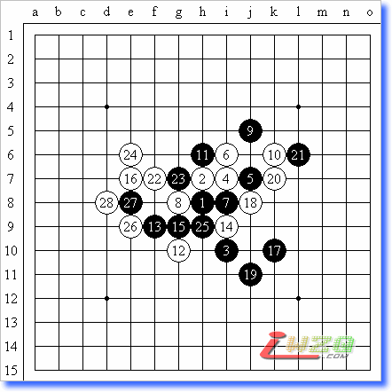
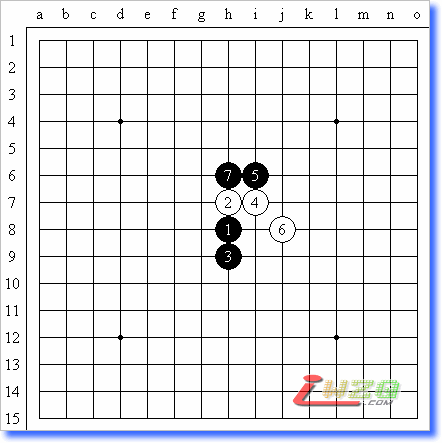
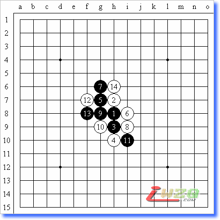
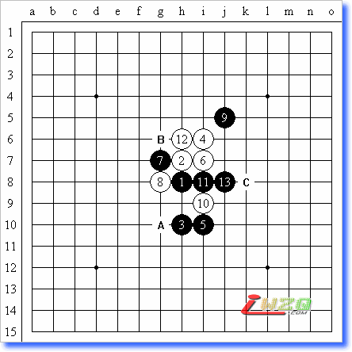

吴镝世锦赛自战记【全】
#1 吴镝世锦赛自战记【全】 作者：有志青年 发表时间：2007-12-11 20:50:22
#2 世锦赛自战记（1）逐渐进入状态 作者：有志青年 发表时间：2007-12-11 20:57:27
从预选赛艰难的出线后，第二天立刻开始进行A组的比赛。A组的比赛一直是我所向往的。记得当年看那威电视讲座的时候多次提到世锦赛A组如何如何，又何成想到10几年后我就自己坐在A组的比赛室内。第一轮开始前心情非常的复杂，心思基本不在比赛上。总觉得自己好象在做一个很长很长的梦。
第一轮的对手是俄罗斯的Chingin，对他我并不是很了解。有限的资料只是知道他是上届世锦赛的第三。而且在去年世团赛上残月执白输给了吴昊，赛前我和云飞谈笑他是否还敢给中国人开残月。因为去年吴昊是采用的残月的一个黑并不是必胜的走法。也许经过那次失败他对残月的研究更深入了。
果然实战他面对未知的中国棋手在开局阶段就长考了40多分钟。我无聊的一直在比赛室外和云飞还有几个台湾棋手聊天。终于他做出了决定。实战依然开出残月。看到开局我很开心，因为在去年下半年中国棋手已经研究出了残月传统定式黑棋的必胜走法。除了个别的12、14是理论胜外，实战的12、14已经做到了地毯胜。来俄罗斯之前我还特意复习过一次。因此我已经看到了胜利在向我招手。
图1
实战进程如我所料：白14后我飞快的下出了黑15必胜点（见图1）。Chingin明显从未见过这个黑15。虽然黑15在中国国内已经不是什么秘密了。但在国外棋手眼中依然是非常的新鲜。但是随着思考的深入他的表情越来越严峻，脸也越来越红，说明他已经看到了黑棋拥有的巨大优势。确实这手黑15非常的强悍。完全打破了旧定式繁琐的下法。时间在一点点的流逝，Chingin依然无法做出16的选择。而我的时间只用了1分钟左右。这里谈下这次世锦赛时间上的设置，每方棋手拥有两小时15分的时间，而且每走一步棋自动加30秒。这和国内比赛采用包干时间的制度是不同的。每盘棋尽量给棋手充足的时间。以减少因为时间而造成的低级失误，可以说很人性化。
当Chingin时间还剩下1分钟时他无奈的做出选择（见图2）。16并不是最强防。但是因为他时间的不充足以及我对形状的理解。我并没有直接的去算黑是否有VCT。事实上这里黑棋简单VCT取胜的。我漏掉了简单杀。16后黑正确下法（见参考图1）。
图2
参考图1
实战我选择的继续做大优势（见图3），现在黑棋在右下势力极强，我没有发现很明显的防点。
图3
Chingin长考90分钟并不是白费，以下白下出一套非常具有欺骗性的下法（见图4）。
图4
20、22看似委屈。但是也把黑完全赶到了右下，如果右下黑无法取胜白在上面的优势足够胜。最主要的是现在黑棋无法直接动1-7、19-5这两个活二了。一但利用到这两个活二，白都可以防守在上面形成反VCF杀（见参考图2）。
参考图2
当看到白这一系列的反击之后我有点犯晕。当时就感觉到自己下错了。重新审视了棋盘后我稳定住情绪开始寻找黑是否还能取胜。因为如果在自己的研究范围内下错了而输掉。那是非常郁闷的一件事情。而我当时的时间还有两小时多。足够我去寻找新的取胜途径的。但是我实战还是无法完全的集中起精神。竟然再次误算了。23正确25并不是最佳取胜方法。实战的26后我似乎看不到黑在哪里取胜了（见图5）。
图5
这让我非常的懊恼。我干脆不看棋盘直接到外面看了一会天空。秋明的天空非常的清澈，让我慢慢平静了下来，很快重新稳定住情绪。再次走进对局室开始最后的努力。以下长考1小时后我终于发现实战隐蔽的黑取胜方法，因为自己感觉状态并不好，我反复计算了五次后才最终确定黑可以取胜。实战27开始白棋全部为最强防，但35黑必胜型，36挣扎了一下37开始直接VCF，Chingin在37后放弃了抵抗（见图6）。
图6
取胜后觉得自己找回了对VCT的敏感，这让我信心充足了起来。那种比赛前恍如做梦一般的感觉越来越浓了。
全谱：
黑：吴镝 五段（交换） VS 白：Chingin 七段（俄罗斯） 5A=8
#3 世锦赛自战记（2）随意的溃败 作者：有志青年 发表时间：None
第一轮取胜后吃了简单的午餐，其实当时已经是秋明当地时间下午3点了，实在谈不上是午餐。而且俄罗斯食物看着就让我没有食欲。所谓的午餐只是简单的喝了点汤和吃了点面包。
第二轮是我开局。对手是爱沙尼亚的Purk Andry，对他我还有点印象，因为曾经在ORC和他交流过几次。这次参加A组的几名爱沙尼亚棋手除了爱伏不太了解，Taimla和Andry都是早先在ORC经常战胜的人。从心理上来说我还是有点优势感的。但是这盘恰好因为自己的优势感痛失好局。
开局我并没有多想直接开出山月。因为根据我的了解Andry是偏重进攻的棋手，虽然山月黑优势很大，但如果攻击错误给白棋保留的余味也将非常的多。这就好比赌博，我不喜欢和棋宁愿采用这种非胜既败的走法。实战前15手都是标准的定式。16手是非常少见的（见图1）。
图1
白16是我个人为世锦赛做过精心准备的变化。看似黑有很多走法都可以取胜，但其实隐藏了众多的陷阱。以下给大家分析下白16：
以下三种走法都是显而易见的黑攻击方法（见参考图1、2、3）。但是这三种走法均为白必胜，具体胜法请大家自己寻找。
参考图1
参考图2
参考图3
还有一盘在QT中我和俄罗斯MAKXIM的对局（见参考图4）。白棋的反击非常凌厉。虽然在QT中我和云飞都下过这个白16了。但是我依然不相信其他棋手可以轻易的拆解出黑如何必胜。事实证明确实他们没有拆解出正确的必胜，但是我同样也没走出正确的防点。

参考图4
这里Andry的17很稳健的先把白的反击交换了一下。19开始大举进攻（见图2）。
图2
看到19我很高兴，因为恰好这里也是我研究过的。19后白必胜：20、22白必胜型（见参考图5）。黑在右边无法攻击得手，转身想防也不现实。如果我按照自己既定的研究下的话，这盘我将轻松取胜。
参考图5
但是有时候实战瞬息万变。当我在20活三后忽然发现了实战的22（见图3），看到白22后我的第一感觉是，这里似乎比我研究的还要强，而且又看到了如果我采用研究的22黑有一个走法似乎可以交换到左边（见参考图6）。
图3
参考图6
这里我出现了严重的误算，认真说起来第一盘我只是找到了算杀的感觉。但是并没有完全的溶入到A组的比赛节奏中。计算的还是很粗糙，如果这里我认真的多计算下，实战的23并不难发现。但是我只是粗略的思考后就走出了22。看到实战的22 ，Andry脸上笑的很诡异。当时我还没看到23，感觉很奇怪。这样的局面黑会觉得很开心吗？大概45分钟后他算清了所有的变化走出了23（见图4）。看到23第一眼我就知道坏了。肯定是针对白棋做的VCF设计的反杀。
图4
从这里开始我进入了两小时的长考。反复的寻找白可能取胜的途径。这里跟过来防守黑棋是不现实的。局面一下激烈起来。下面来看看黑都是如何应对白各种进攻方法的。
见参考图7： 24白如果这样做VCF的话黑连续冲掉25.27之后白棋的VCF不成立下面黑简单杀。
参考图7
见参考图8：因为29先冲的次序，白以下在左边做不出VCF。右下无法防御黑必胜。

参考图8
见参考图9：白更改进攻次序依然抢不到29的关键点。黑右下简单杀。
参考图9
我们继续来看实战，实战的24（见图5）是我长考两小时后的无奈之举。这时我已经算干净了所有的变化，黑确实必胜了。同时我也计算清楚了22按照研究去下的结果。这让我非常的郁闷。
 by:web版
by:web版  IP：
已记录
IP：
已记录
#4 世锦赛自战记（3）轻率落败 作者：有志青年 发表时间：2007-12-11 21:55:39
经历了第一天一胜一败之后我排名中游。第二天第一盘棋的对手是在QT中战胜我的俄罗斯女棋手Savrasova Yulia。我对QT中失败的那局非常的不服气。那盘是梳星我执黑中盘已经取得了绝对的先手。但是由于俄罗斯寒冷的天气造成我当时身体非常的不舒服。后面下的非常随手。把大好的局面葬送掉了。所以对她的中盘我并没有感觉到威胁。只是觉得她的防守很不错而已。这种轻视的心理造成了这盘失败的主因。
实战Yulia没有思考的就开出了流星开局。这让我非常的不舒服。到不是说流星开局多么复杂，我对流星也是非常熟悉的。问题是流星开局很多黑棋下法会把局面迅速导入和棋，这对追求胜利的我来说是很不愿意看到的。实战的白4我研究也不多。只是印象中记得是可以把局面导入平衡的，那样可以避免走一些定式化的东西，白取胜也机会大一些。
但是明显我的白四没有给Yulia造成任何的困扰，黑五她下的非常的快。白六开始我进入长考（见图1）。
图1
白六如果简单的嵌套形状黑牢牢控制住先手，Yulia虽然攻击凌厉性不够。但控制性还是蛮强的，我可不想被套到和棋。于是我开始寻找诡异的白六（见图2），我的目的很明确要把局面导入更复杂。这里我的思路已经出现了严重的偏差，过于低估Yulia的攻击力了，而且过于追求局面的改变。我已经失去了一颗平常心，连珠本来就是耐心的较量，尤其在这种高水平的对抗中，在局面并不明朗的情况下激进往往带来的都是失败。
图2
实战的白6下的过于强硬了，黑7是预料之中的，白8才是我下白6的目的所在。在计算白6的过程中，我看到白8后黑似乎并没有好的拓展点，而且白棋在右边和上边都保留适当程度的攻击。黑被我压缩的只能向下发展。这样的局面黑一个控制不好会迅速失先。当下完白8后重担就落到了Yulia身上。我似乎看到了胜利的曙光。
实战的黑9！！（见图3）完全的出忽我的意料。我思考了周围很多的黑9拓展点。惟独没有思考到实战的黑9。粗看之下似乎白只要跟过去防就可以，但是黑只要再补一手白棋将彻底崩溃。
图3
如参考图一、二： 13后我看不到白的防点。白最强防后黑直接VCT取胜。
参考图1
参考图2
如参考图三，12逆向黑直接VCT取胜。因此白10直接跟随的防点不成立。
参考图3
其他的白10很多都因为这个11而不成立，这里就不一一摆出了。黑9随着我思考的深入越算越觉得强大，本来我的时间还有一个半小时多，不知不觉中已经只剩下了10分钟了。痛苦无奈中我思路再次出现了偏差，因为Yulia的时间也不是很多。黑9同样把她的时间消耗到只有20几分钟了。在这样短的时间内她能计算出VCT吗。这样的思维主导了我的思想。我看到了实战的白10.由于前面长时间的计算，这个时候我头脑已经不清醒了。竟然没有算的直接的黑VCT取胜。再加上时间的紧张，最后我落下了这手形同虚设的白10（见图4）。
图4
白10完全的没有理会右边黑棋巨大的优势。估计这手白10让很多人都目瞪口呆吧。以下黑棋简单的就VCT掉了。输了这盘也彻底的把我打醒了，不能小看A组任何一个对手。能进入A组的不会有低手，小瞧对手只会给自己带来失败的命运。
在比赛结束后我和云飞相对无语，他非常不理解我不理智的白10，我问了下是否还有夺冠的可能，他告诉我历史上夺冠最低分也要8.5，如果我想夺冠就必须在后面的比赛中一盘不输才行。这个难度非常的巨大，甚至对当时的我是一个不可能完成的任务。面对这样的难度我反而彻底的放松了。既然夺冠希望不大了那就好好的下吧。下出不让自己懊悔的对局。好好的证明下我下棋多年到底能达到一个什么程度。如果可能的话给中国保留一个A组的名额也是不错的。这样的心态下我迎来了第二天下午的对局。
全谱
黑：尤莉娅 七段（俄罗斯） VS 白：吴镝 五段（不交换） 5A=12 黑19白投了
#5 世锦赛自战记（4）策略制胜 作者：有志青年 发表时间：2007-12-12 10:01:54
连续的两败把我带到了不能再输的境地，同样也教育了我不能小瞧任何一个对手。我开始精心准备起下午对日本老棋手Iio Yoshihiro（饭尾义弘）的开局。由于在QT的时候看过他和别人下松月都走三打。而这次比赛前我精心准备了几个松月三打中白很有趣的变化。因此第一选择开局就是松月。现在我是两连败，相对的应该是他轻视我。这样他肯定不会走二打追求和棋。取胜也一样是他的想法。
下午比赛开始后我开出松月，之后去倒了杯咖啡等待他交换。Iio并没有痛快的交换，反而仔细的思考起来。这不禁让我产生遐想，难道他不交换？因为传统松月三打的强防是我前段时间的研究重点。如果他不交换我会下的非常顺利。果然长考之后Iio没有交换，反而白四转变成了银月开局（见图1）。轮到我来想后面的对策了。
图1
正常来说银月开局现在的研究结论是一打三打黑必胜，但是这里我忽然想到一个白的骗招（见参考图1），这个变化我大概记得一点，但是后面具体的胜法想不起来了。鉴于日本老棋手喜欢拿一些生僻变化考验对手，有很大可能会对我采用这个变化。经过长考确实回忆不起来具体的胜法了，为了避免进入对手设计的圈套。我采用不常见的黑5走法。事实证明我的直觉是非常正确的，后来在第9轮的比赛中Iio果然用这个变化考验了Andry，并且取得了胜利。
参考图1
实战黑5并不常见，属于黑中盘拥有一定优势的变化。在第一轮中Iio执白和oll就下的这个变化。最后黑攻击了全盘双方和棋。因此他看到这个黑5之后觉得非常的头疼。白6就是他对oll时候采用的，是白最强防，以下黑7走在2右边将彻底还原他和oll的对局。这样的局面不是我所愿意看到的。于是实战我走了求变的黑7（见图2）。

图2
实战的白8、白10很有欺骗性。黑11唯一防（见图3），其他防点均简单败，黑11后白棋看似有抓3.3的手段（见参考图2），黑棋存在巧妙的解禁手段。
图3
参考图2
Iio明显也看到了这些下法，白没有直接的采取攻击。12、14、16连续三手想把战场转移到左边（见图4）。不过这三手交换让我非常的费解，难道Iio强大到把这里黑所有的攻击手段都算清楚了吗？带着疑问我开始计算。这里黑棋的进攻线路非常的单一，并不难计算，所以看着这个局面更是让我挠头。因为我已经算到黑直接VCT取胜了。难道是随着比赛的深入老人家体力跟不上了？或者是考验下中国棋手计算VCT的能力？带着疑问我开始进攻。
图4
实战到25简单的就VCT掉了（见图5），感觉赢的非常轻松。
图5
18反挡取胜见参考图3：
参考图3
这盘感觉赢的莫名其妙的，虽然开局阶段思考了很多。但是局面也只是黑先手而已。要想取胜需要漫长的中盘对抗才有可能。但是随着Iio莫名其妙的几手棋，本来复杂的局面简单就杀掉了。实战中果然什么情况都会出现。不过还好这盘的轻松取胜让我稳定住了两连败后的颓势。为之后的比赛打下了基础。
全谱：
黑：吴镝 五段 VS 白：饭尾义弘 七段（日本，不交换） 5A=13 黑25白投了
#6 世锦赛自战记（5）中盘较量 作者：有志青年 发表时间：2007-12-12 10:37:39
经过两天的比赛我对A组已经完全的适应了。两胜两败的成绩不算好但也可以接受，毕竟我是第一次参加这种世界最高水平的比赛。A组开始的第三天秋明开始下大雨，气温骤然降低7度左右。下面就是A组第五轮我对爱沙尼亚棋手Oll Aivo的对局。这盘对局和之后我对山口的那盘棋是本次A组比赛中我最得意的对局。也是通过这盘全盘联系进攻的深入计算，把我的状态终于打出来了。
这盘开始后Oll Aivo和Taimla迟到了。国外比赛和国内不同，不是棋手迟到15分钟直接判负，而是把对手时间全部消耗没才算超时负。直到比赛开始后快50分钟他们两人才匆匆赶到。Oll Aivo顾不得休息下了，直接开出疏星。倒是我看到疏星开局很有一些想法。因为我现在根本不想和棋，但是疏星黑有一定的先手权，如果被黑先手控制住最后空间必然非常的小，白很难有取胜的机会。而且既然他开了疏星就必然是有准备。打破对手的既定思维自己掌握主动才行。因此我选择了交换。
实战黑5是我非常了解的一个点，之后白6正常下法黑将一直控制全盘。但是实战Oll Aivo想都没想直接给出了这个白六（见图1）。说明他对这个白六研究很深。但是我恰好没怎么下过这个白六，只是印象中国内网络棋手对这个白六的结论是黑无法胜。具体黑如何走强全然不知。
图1
以下正常交换到白10（见图2）。从局面上看我如果想套回6-7的变化是绝对不可能了。而且白在下面势力似乎很强，局面黑很被动。看着我比对手多出的50分钟。想想之前输掉的两盘对局。我在心里就下了一个决心，一定要攻死对手，好好展示下我的攻击能力。
图2
以下经过30分钟的长考我走出了实战的黑11（见图3）。这个黑11很有欺骗性。白棋看似可以防的点很多，但是在计算后大部分白防点黑都可以必胜。
图3
白12想打断黑向上发展的话，黑13直接局部必胜（见参考图1）。

参考图1
白12变化，黑15后白难防（见参考图2）。
参考图2
白12变化，黑15后白难防（见参考图3）。
参考图3
Oll Aivo面对黑11的攻击性还是很稳健的。实战的白12应该是最强防了，以下黑先手把这里定型。黑17转身开始从左边进行全盘的控制（见图4）。这是我非常喜欢的风格，这样不管黑能否取胜，首先白棋绝对不会有机会。而且右边11-13-15的眠三给下面的做棋会有很大的帮助。
图4
白18依然非常的稳健，看来Oll Aivo对中国棋手的了解对他帮助很大。不会贸然和我采用对攻的策略。黑19我下了步试应手（见图5）。一方面彻底把白棋的出棋点封掉，另外给白棋一个选择是攻是防的机会。如果白这里激烈的直接在上面做棋我是完全有信心防住的。现在完全是我和Oll Aivo中盘的较量了。在国内时候总听到有些人认为中国棋手中盘不如欧洲棋手，全靠的研究。那么这盘将完全没有研究的成分。是时候检验下中国棋手的攻击能力了。
图5
白20疑问手。显然Oll Aivo看不到白可以出棋的地方，选择了继续忍耐。但是这样的防守太抽象了。如果我不按照他的思路进攻的话这手的效果将大打折扣。黑21显然的攻击点。白22最强（见图6），选择其他的22，黑将利用13右边过渡和下面的眠三取得联系。

图6
白22后我看了一些攻击的形状，一系列交换后，黑在左边出现非常舒服的形状（见参考图4）。这样的形状在一名善于进攻的棋手眼中和必胜无疑。于是我开始考虑能否直接交换过去。但是发现现在直接交换24的防点并不唯一。

参考图4
白24反挡后我看不到黑如何取胜（见参考图5）。那么怎么才能让24无法反挡呢。如参考图5所见，黑经过一系列的交换后会在下面形成两个眠三。但是在交换后再通过这两个眠三进攻明显很勉强。那么在交换前呢？
#7 世锦赛自战记（6）稳中求胜 作者：有志青年 发表时间：2007-12-12 15:50:53
在我的心中始终有个坚持，就是不能输给日本棋手。这不是什么偏见，是一种从小固有的情绪。在A组的比赛进入第四天的时候我碰到了另一名日本棋手。日本新生代棋手中的代表人物，Okabe Hiroshi（冈部宽）根据之前对他的了解，他虽然是年轻棋手，但是行棋的方式和传统日本风格一样保守。不会轻易的采取攻击姿态，除非有完全的把握不会主动的去进攻。宁可和棋也不会随意的尝试。面对这样的风格，我如果过于冒险的去进攻很容易把自己葬送掉。既然他喜欢缓慢的节奏，那么我就和他下缓慢的节奏。让他自己先出错。
实战我开局开出疏星，既然认定了这是一盘慢长的对局。那么保持一颗平常心就是最重要的。果然冈部没有选择交换，毕竟疏星是后盘白优的开局，除非有特别的研究或者想取胜的心理，否则没有谁愿意交换的。黑5我依然走的昨天和Aivo的那个点。
以下局面平稳，白12是近些年针对这个白6的比较常见的走法（见图1）。结论是黑引领全盘，但是很难取胜。大部分对局以和棋收场。
图1
一直到黑23（见图2）都是双方最正常的交换。果然冈部不愿意求变。黑23他也是见过的，这个黑23白确实没有什么好的办法取得先手。现在的局面是黑白双方谁急进谁被动。标准的比耐心局面。
图2
白24、26（见图3）冈部依然很稳健的交换，并且为白棋的进攻做准备。
图3
到目前我还是没发现黑比较好的机会，但是白26后不甘心右边的优势被白棋一点点化解掉。于是我抢先把右边交换了。黑27、29利用先手把黑的优势保留住，黑31（见图4）转身补住白的攻击点。现在把主动权交给冈部，看他如何处理。现在的局面有点类似双方在推来推去，因为谁主动进攻都不是很好攻的。还容易给对手带出棋来。现在比的就是耐心。
图4
白32（见图5）冈部宽过于用强了。明显想大举进攻。可能是我前面几手走的并不激烈，给了他一种我不喜欢攻击的感觉。于是他开始主动进攻了。
图5
但是他过于小看了黑棋27、29的交换保留的余味。以下我也不想继续跟着他走了，黑33是为黑35的攻击点做准备。黑35非常激烈的一手。白36（见图6）冈部不想跟着防而让我继续扩大优势，走的很激烈。想利用上面白局部的杀消化黑左边的势力。
图6
黑37必须活三。否则被白反身防住黑很难继续进攻。黑37、39很好的组合形状（见图7）。现在黑棋才算彻底发动起攻击。
图7
白40无奈，这里白40先冲掉黑41的位置更好一些。这样黑无法抢到黑41的点来主动防御。实战中白40没有冲掉。黑棋轻松抢到41，上面白出不来攻击了。黑43（见图8）直接打断白棋这里的牵制，看似防守，其实是为之后和左边的联系铺平了道路。至此局面彻底倾向于黑棋。哪怕黑无法取胜白也没有任何取胜的机会。
图8
实战白44是看到下边和左边的联系才做出的无奈选择。黑45（见图9）顺势继续盖住，依然保持和左边强烈的联系。
图9
冈部宽终于顶不住压力了，白46败招。黑47（见图10）黑必胜。走出黑47后我长出一口气。终于在第六轮后我的积分追上来了。终于再次证明了中国人在平衡局中的中盘能力。以下冈部简单防了防就认输了。这是一盘并不精彩的对局，因为满盘都是缓慢的进攻和缓慢的防守。最后因为对手一个坚持不住而骗杀成功。但是这盘棋让我耐心得到了很好的锻炼。才不至于在后来对山口知道自己走错的情况下轻易的放弃。
图10
6轮后我积4分，感觉很快就可以完成保组的任务了。
全谱：
黑：吴镝 五段 VS 白：冈部宽 七段（日本，不交换）5A=8 黑51白投了
#8 世锦赛自战记（7）夙敌之战 作者：有志青年 发表时间：2007-12-13 12:46:17
#9 世锦赛自战记（8）轻松一局 作者：有志青年 发表时间：2007-12-13 12:57:53
战胜山口让我无论是积分还是状态都达到了最顶点。现在这个时候再谈什么保组明显有点自欺欺人。我心中隐约感觉到可能这次我要创造个奇迹了。压抑着心中混乱的思绪。比赛进入到第五天所有A组的棋手都已经开始发力了。坦克和琴晋在不知不觉中积分都追了上来。第八轮我的对手是俄罗斯的Kozhin Mikhail。通过前面七轮的表现。这位一路寒星通过俄罗斯国内预选的棋手在大家眼中成了抢分的重点对象。不过对于我来说不利的是对手开局。
实战Kozhin开出流星。给我的感觉又是一个想和棋的人。这次白四我没有乱变。直接走的流星白最强的四手。以下定式到黑9，果然Kozhin走了老变化（见图1）。
图1
其实我这里已经做好了长期战斗的准备。因为老定式的黑9后面有一路必和的大定式下法（见参考图1）。
参考图1
黑可以利用先手把白棋的进攻材料消耗的很干净。白要想取胜只有依靠对手防出弱手才有可能。这盘棋很可能要下到百手左右才会结束。
实战的13下法完全没见过。以下一路陌生的交换到19。白棋要在这里做选择了。长考后发现这里黑确实有点小的欺骗性（见图2）。
图2
黑25防御后白棋在上面我算了半天没发现有具体的胜。看来黑棋是打算引诱我这么进攻了（见参考图2）。
参考图2
这里我修正了一下自己的思路。发现前面如果不变24回来补一手白在大局上依然是先手（见参考图3）。虽然黑看似先手进攻。但白棋在四处都有余味。很有可能在黑崩溃之时就是白必胜之时。
参考图3
虽然我进行了深入的思考，但是如果对手下不出来那真的也是一种郁闷。好象拳头攒足了力气却打空了一样。这盘实战就是这样。23竟然完全不顾白在上面的简单胜。直接挡在了下面。让我前面算的那些交换全部失效了。如果是头几轮也许我还不一定可以计算的非常清楚干净。但在四连胜之后我的状态完全出来了。24开始的VCT10分钟就全部算干净了。24.26的组合形状直接白必胜（见图3）。
图3
黑棋顽强了一下。27最强防，但是后面我都已经计算清楚了。一路交换后36简单杀了（见图4）。

图4
到了这个时候Kozhin才如梦方醒般进入了长考。不过已经晚了。37后白直接VCT（见图5）。
图5
黑43反挡直接局部抓四四禁手（见参考图4）。
参考图4
连我自己都没想到5连胜来得如此轻易，Kozhin虽然打了好多届世锦赛，但他真的老了，连这套并不复杂的VCT都漏掉。很难让我想象他是如何通过俄罗斯国内预选的。Chingin一直在旁观这盘对局。当Kozhin停钟认负那一刻他撇撇嘴离开了。想必他也很不满同胞的拙劣表现吧。
全谱
黑：Kozhin 五段（俄罗斯） VS 白：吴镝 五段（不交换） 5A=7 白46黑投了
#10 世锦赛自战记（9）击溃坦克 作者：有志青年 发表时间：2007-12-13 16:52:42
估计任何关注比赛的人都不会想到，8轮过后占据积分榜第一位的会是QT第五进入A组的中国棋手。说实话连我自己都不会想到。尤其在第二、三轮连败的情况下。打到这个地步我已经很满足了。心理上完全没有负担，这样的状态下我更容易发挥自己的水平。
第九轮的对手是真正意义上得到过世锦赛冠军头衔的爱沙尼亚棋手Taimla Tunnet。在中国很多人都亲热的称呼他叫坦克。04、05年在ORC我和他有过多次交手。胜负关系上我占据绝对的优势。当然网络里下的棋和实战是完全不同的。但是对他的风格我还是相对了解的。
实战我开出松月是因为坦克对各种流行变化都很熟悉，而松月在我印象中他很喜欢走三打。而我为这次比赛精心准备的松三变化一次没用上呢，总是不太甘心。所以一定要用一次才行。
可惜我再次失望了。坦克确实如我所愿交换了过去。但是两打毫不犹豫给出了二打。面对基本和棋的二打，想想我已经五连胜了，对这次世锦赛没有什么遗憾了。那么不如走点有趣的变化。实战我下出了非常诡异的白6（见图1）。这手白6是湖南棋手陈新（风尘）教我的，虽然只是粗略的拆了下。但是由于我知道正确的必胜走法。因此并不担心。最主要的经历了五连胜的我信心充足，相信只要坦克下的不是正确的，我就可以防住。这盘正是依靠这种极度的自信，才化解了一次次危险。
图1
白6正确胜法（见参考图1），黑棋经过一系列交换还原成三打的同型。黑必胜。

参考图1
实战白6确实给坦克带来了极大的压力。而且这盘又是在傍晚，数天的对局把每个棋手精力都消耗干净了。每天晚上的对局漏洞都是很大的。他经过50分钟的长考下出了还原三打的黑7。白8是我利用他思考时间做出的选择（见图2）。
图2
因为在三打中有这样一个类似的变化（见参考图2）。在三打中白10和12的交换是我和曹东经常下的变化。交换后黑很难取胜。而坦克的黑7正常的防御很容易被套到三打黑大优的变化。于是我走出了这么激烈的形状，来考验坦克对局面的把握能力。

参考图2
坦克实战的11非常出忽我意料（见图3）。竟然没有直接扩大黑棋的优势，而是过来做了一手控制白形状的棋。但是经过深入的计算才发现这手11很强。
图3
这里如果我单纯的防御在9左边，黑可以直接追胜（见参考图3）。
参考图3
当然白10还有防在黑33禁点的下法。但是感觉上都不如9左边的白10防的彻底。长考后我决定先把黑VCT的点抢掉。12、14设计好的防点。15非常野蛮的进攻（见图4）。体现了坦克的攻击力。当我在回国后听到很多人在讨论这里黑如何如何漏杀。但是当我看到那些杀法的时候我都笑咯。根本没有VCT或者简单的形状杀的。试问这种利用软件拆解出来的杀实战有多少人能下出来呢。在实战中优势和连续性才是最重要的。尤其是当你对面的对手是一名五连胜的棋手。有几个人有这种胆量博命式的去进攻呢？
图4
继续来看实战。实战的15让我非常的痛苦，许多白的防点黑棋都可以直接VCT掉。这些防点黑棋都简单胜（见参考图4、5、6）。
参考图4
参考图5
参考图6
只有实战的白16我看不到黑有直接取胜的方法（见图5）。
图5
果然白16后坦克也没找到黑胜。黑17继续扩大优势。我依然在痛苦中。这里我选择了彻底打断黑棋左右联系的点，选择这里还因为我看到黑有一路很强攻击但是最后白有个冲长连解杀的手段。如果黑棋这样进攻因为32的冲长连。黑棋将彻底崩溃（见参考图7）。
参考图7
实战如我所料坦克也看到了这套杀，
#11 世锦赛自战记（10）决战提前 作者：有志青年 发表时间：2007-12-15 16:03:57
#12 世锦赛自战记（11）最后之战 作者：有志青年 发表时间：2007-12-15 17:14:39
11轮比赛打到最后一轮毫无疑问每个人都很疲劳了，相反的我却精力越来越充沛。这大概就是连战连胜带来的好处。7连胜是非常美妙的，之前的国内比赛我参加河北赛有过六连胜，虽然电子竞技CEG的总决赛我也是7连胜夺冠，但是那种快棋赛毫无疑问没有这种在棋盘上精心对局获得的7连胜美妙。尤其是在代表世界连珠最高水平的A组中，战胜一个又一个世界知名棋手，让我无论自信还是状态都达到了最颠峰。
面对最后一轮的对手俄罗斯Sushkov Vladimir八段，我的准备应该算是很精心的。因为他在近几年的国际比赛中战绩非常出色，两届世锦赛亚军对ANDO的不败，这些都让我对他小心翼翼。本来这次世锦赛前他是夺冠的最大热门，可惜在中间他几度失手，目前只排7分，而且由于小分过低，最后一轮哪怕他战胜我夺冠也是没有希望的。最后一轮说他为冠军而战到不如说是为尊严而战。
实战我开了最稳健的瑞星。在俄罗斯这些天和我们接触最多的就是Sushkov，因此他对我的知识量是没有怀疑的，他也知道最后一轮我只要和棋就会冠军。因此在我开局瑞星后没有考虑过交换的问题。白12（见图1）的选择上A点由于会导入和棋他肯定不会走，B点在前一天我战胜Karlsson的对局中已经体现出我的研究深厚，所以也不会选择。C点白棋反击很少，黑棋利用优势控制全盘不成问题。他也不会选择。似乎这盘棋他的白12只能选择D点，因为之前他就是在这个白12中被山口执白击败。果然实战他选择了B点。
图1
面对12团角的下法我并不陌生，因为在以前国内的比赛中，如果我不想和棋也经常走这个白12，可以说我对白的一些下法非常的熟悉。但是这次在来比赛前，中国网络棋手中的几名代表人物都向我推荐过13直接活三的走法，认为那个走法黑棋优势巨大，甚至在理论上黑棋是必胜的。这里我不想走传统的13把局面导入对手熟悉的地方，传统13后白12有A、B、C（见参考图1）三点常见选择。三个点哪个黑棋都不会很容易进攻取胜的。

参考图1
实战我决定尝试下新的走法， 14唯一，反挡黑棋简单胜。15的走法（见图2）最早出现在比赛中是第三届全国赛重庆棋手邹入志（网名折枝客）对北京殷立成老师的对局。当时白棋面对未知的局面防守错误速败。这两年13-15的走法慢慢流传开了，速胜的情况肯定不会出现了。

图2
Sushkov似乎对我选择这个走法准备不足，面对15就开始长考，以下白棋应对无误。18后黑棋常见走法是下在18的右边。但是在来比赛之前某网络棋手向我推荐了19直接活三的走法。认为21后黑棋优势巨大。虽然之后的局面我没仔细拆过，但是对于自己计算能力的自信让我依然选择了这个21。果然Sushkov没想到我会选择挡在下面，21后再次长考。实战的22（见图3）是很强的一手。
图3
初看到22让我感觉很不舒服。计算了几个走法似乎先手都会属于白棋。在长考后发现了实战的23（见图4），在计算白棋各种交换方法后，发现无论白棋怎么交换黑在右下都会有一套隐蔽的VCT。其实这里我计算错误，实战的23并不是最强。而且黑棋右边貌似存在的VCT白棋也有强防。
黑23后，Sushkov如我所料的进行了交换，之后长考计算我右边是否存在VCT。但是长考后的结果让我大吃一惊。28！非常激烈的一手，看来他对胜利的渴望丝毫不在我之下。28让我难以想象，因为在计算23的过程中我就算过了，白棋在左边无法做出VCF。而黑棋在右下存在VCT，这里白棋不可能脱先的。难道我之前计算错误？带着这种疑问我又仔细的计算了右边黑棋的VCT，却没看到白棋的强防在哪里。很疑惑的我抬起头小声对Sushkov说NO VCF？之后开始在右边落子进攻。
图4
黑29（见图5）后白棋有两种选择。这里我计算确实是错误了，误算白棋挡在A点黑棋有胜。

图5
白34后（见参考图2）黑棋在右边没有直接取胜。下到这里黑棋只能利用15-27的联系向上过渡去防守白棋。但是会防的非常辛苦。
参考图2
但是实战中意外总是会发生，Sushkov这里简单的计算后30挡在了A点（见图6）。这里我早已经重点算过。黑31做杀以下开始直接VCT。
#13 Re:吴镝世锦赛自战记【全】 作者：五子天下 发表时间：2008-3-30 12:03:00
等以后自己强了再来看~
#14 Re:吴镝世锦赛自战记【全】 作者：越狱行辕 发表时间：2008-6-21 22:20:45
老大这个太好了 能不能给做成 棋谱的形式啊 讲解也带上#15 Re:吴镝世锦赛自战记【全】 作者：双队长 发表时间：2008-8-28 9:26:26
果然是经典，强强对抗啊#16 Re:吴镝世锦赛自战记【全】 作者：游戏王 发表时间：2008-9-4 1:01:44
打击啊 爬的高了才感觉到高处不胜寒 职业确实是职业#17 Re:吴镝世锦赛自战记【全】 作者：阿赖耶 发表时间：2008-9-9 10:12:40
把这十几盘棋看完要花费我好多好多日子呢，变幻无穷啊！#18 Re:吴镝世锦赛自战记【全】 作者：越狱行辕 发表时间：2008-9-11 13:50:18
呵呵 有志大哥 发现错别字了 黑：山口釉水 九段（日本） VS 白：吴镝 五段（不叫换） 5A=18 白76黑投了 “不叫唤”呵呵
黑：山口釉水 九段（日本） VS 白：吴镝 五段（不叫换） 5A=18 白76黑投了 “不叫唤”呵呵［ 有志青年 于 2008-9-11 14:45:22 时奖励此帖[金币加 20 威望加1］
#19 Re:吴镝世锦赛自战记【全】 作者：郝毅 发表时间：2009-2-12 23:05:28
马马虎虎看了2小时 都疯了
恭喜 吴镝 大师 功德圆满!
#20 Re:吴镝世锦赛自战记【全】 作者：超级菜鸟徒弟 发表时间：2009-2-27 20:59:26
先保存下来，以后再好好看一看。
#21 Re:吴镝世锦赛自战记【全】 作者：瑞星棋童 发表时间：2009-3-9 10:00:51
中国人的骄傲！向世界冠军学习！#22 Re:吴镝世锦赛自战记【全】 作者：启蒙 发表时间：2009-4-8 3:31:11
刚才又认真看了一遍，仿佛随着大鱼LS身临棋境，进入了实战棋局！
仔细回想大鱼LS的话，感触很多！
#23 Re:吴镝世锦赛自战记【全】 作者：慕容晓文 发表时间：2009-7-23 13:40:49
不凡的经历……希望将来也能有机会体验一下世界杯A组的感觉#24 Re:吴镝世锦赛自战记【全】 作者：研究三川 发表时间：2010-8-23 19:29:56
为什么17手不走E7 有点不解
#25 Re:吴镝世锦赛自战记【全】 作者：霸王龙 发表时间：2010-11-29 12:48:16
好多#26 Re:世锦赛自战记（7）夙敌之战 作者：伽罗华 发表时间：2012-1-22 15:00:38
？？？？？？#27 Re:吴镝世锦赛自战记【全】 作者：秋叶散人 发表时间：2013-9-1 14:45:38
求吴镝大神或有志大师将第7局（夙敌之战）和第10局（决战提前）补上。
万分感激！